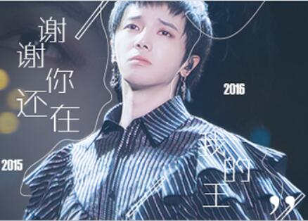
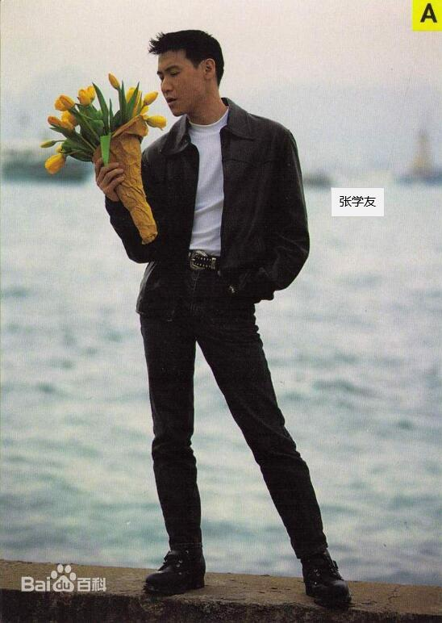

网易云歌手排行榜(点击查看)
- 薛之谦是大陆著名的歌手有着独特的嗓音他的歌声具很强的感染力
- 他的代表作有很多其中《丑八怪》最好听他的歌声很治愈。
- 他的为人也很幽默，因此收到粉丝们的喜欢。
- 他是一位很受人尊重的歌手。
- 邓紫棋之前是在香港发展回内地参加了中国好声音之后名声大噪。
- 她发行的首张专辑《G.E.M》取得香港各大乐坛颁奖礼新人金奖。
- 她的歌声很具有感染力，而且气场也很强。
- 2016年1月5日，邓紫棋入选《福布斯》"全球30岁以下30位最具潜力杰出音乐人"。
- 
- 华晨宇，1990年2月7日生于湖北十堰中国男歌手毕业于武汉音乐学院
- 参加湖南卫视《快乐男声》获年度总冠军出道
- 2014年1月，首登央视春晚舞台。同年4月，参加户外真人秀节目《花儿与少年》
- 9月6日-7日，在北京万事达中心连开两场“火星”演唱会，随后首张个人专辑《卡西莫多的礼物》发行。
- 
- 张学友（Jacky Cheung），1961年7月10日出生于香港中国香港男歌手、演员毕业于香港崇文英文书院
- 1984年因获得首届香港十八区业余歌唱大赛冠军而出道
- 1985年发行个人首张专辑《Smile》
- 1993年发行的专辑《吻别》打破华语唱片在台湾的销量纪录